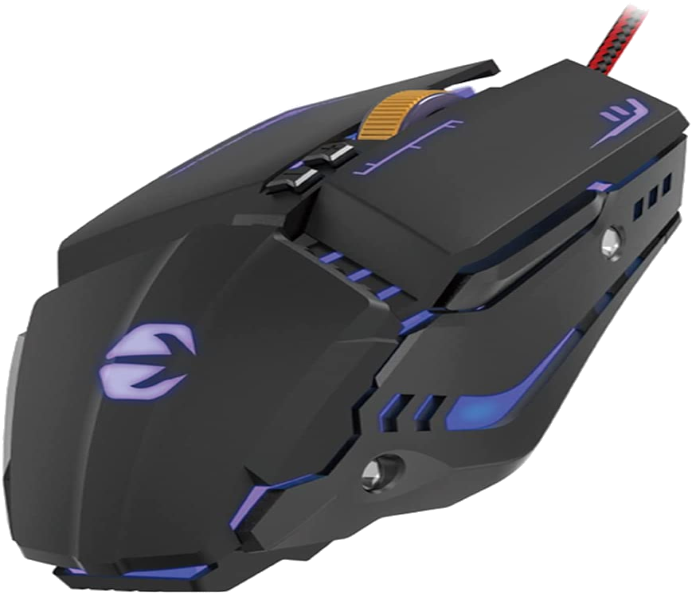

Mimacro Ratón Gaming
Desde hace mucho tiempo, cuando entro a Amazon a buscar un ratón, aparecen este tipo de productos 'chafa-chinos' que me hacen mucha gracia personalmente, pues solo por ser "gaming", hacen la forma del ratón muy monstruoso y extravagante, lo que genera un rechazo hacia pensarse si comprar dicho ratón.
Por esto, hace poco me decicdí a comprar un ratón de estos y probarlo durante una semana, a ver que experiencias sacaba en corto. Os hago un adelanto, uno de los peores ratones que he probado nunca.
El ratón cuenta con los botones habituales de cualquier ratón, y además tiene dos botones extra en la parte superior que permiten cambiar rapidamente la velocidad del cursor en pantalla. Lo que modifican es una medida llamada DPI que determina la distancia por velocidad necesaria para mover el ratón, por ejemplo, a un DPI de 2400, el cursor tendrá más precisión pero menos velocidad, y a un DPI de 7200 tendrá menos precisión pero más velocidad.
Mi experiencia personal con este ratón fue que se sentía muy plasticoso, el plástico con el que está creado, no es de buena calidad, y el sensor óptico con el que viene, no tiene mucha precisión, a pesar de que tenga la característica de los DPIs.
Además de que su forma no es una obra de arte, a la mano es bastante incomodo, ya que tiene esas endiduras que,a corto plazo no presentan un gran inconveniente, pero a la hora empienzan a ser molestas.
Este ratón se encuentra en Amazon, no es de una marca conocida, y su precio es de 14,99€.
Por el mismo precio existen ratones más duraderos y menos exagerados en cuanto a forma, en esta misma página hay un ratón con esas características, si estás interesado, puedes verlo aquí.
En el siguiente apartado aaaa, voy a mostrar las características del ratón en dos puntos de vista:
Ventajas:
Desvantajas:
Para concluir, se trata de un ratón "dirigido" hacia el público que usa el ordenador para jugar. Sin embargo el hecho de que no sea de gran calidad, hace que sea poco recomendable, pienso que para comprar este ratón es mejor comparse uno sencillito pero de mayor calidad o de una marca conocida.
2/10